Digitale Lagekarte im Katastrophenschutz mit OpenStreetMap
Jannis Lübbe
jaluebbe
ROSEN Gruppe
Bundesanstalt Technisches Hilfswerk (THW)
- 88.000 Ehrenamtliche Helfer
- 1 virtueller + 668 lokale Ortsverbände
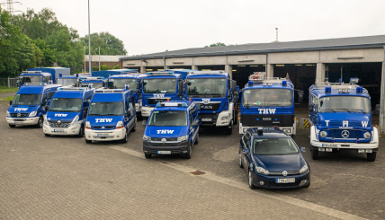
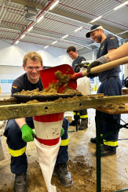
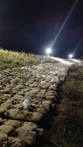
Techischer Zug
~30 Helfer
Zugtrupp
Unterstützung des Zugführers:
- Sprechfunk / Kommunikation
- Lagekarte
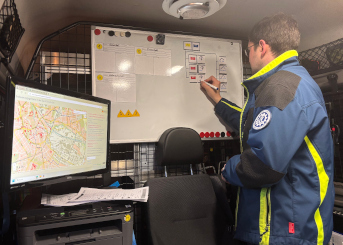
Ausblick
- Off-Line und Off-Grid Betrieb
- Zugang über WLAN Hotspot
- Deutschlandweite Abdeckung
- Direkt auf die Karte zeichnen
- Suche nach Orten und Straßen mit Postleitzahlen
- UTMREF-Koordinaten
- Live-Demo
- Live-Updates über LORAWAN (in Arbeit)
Raspberry Pi Zero 2 W
- Kostengünstig und energieeffizient
- 64-bit quad-core CPU
- Kann über mobile Stromquellen versorgt werden
WiFi access point
Nach Tutorial AccessPopup von www.raspberryconnect.com
- Verbindet sich mit bekannten WLAN-Netzen
- Erzeugt einen WLAN-Hotspot, wenn kein WLAN gefunden wurde
OpenStreetMap Daten
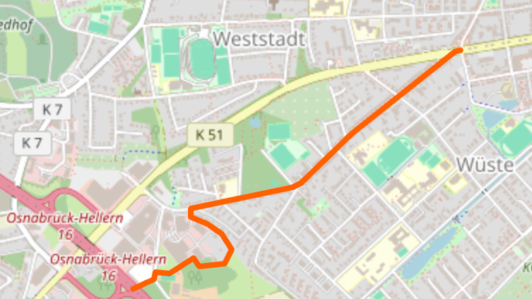
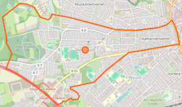
| Node | |
|---|---|
| Tag | Wert |
| name | Weststadt |
| place | suburb |
| Way | |
|---|---|
| Tag | Wert |
| admin_level | 10 |
| boundary | administrative |
| Relation | |
|---|---|
| Tag | Wert |
| name | Weststadt |
| type | boundary |
| admin_level | 10 |
| boundary | administrative |
Darstellung der Karte
- Verwendung von Leaflet.js für die Karte
- MapLibre Plugin für Vektorkacheln
- Geoman.io für eine Werkzeugleiste
- leaflet-measure-path (Länge und Fläche)
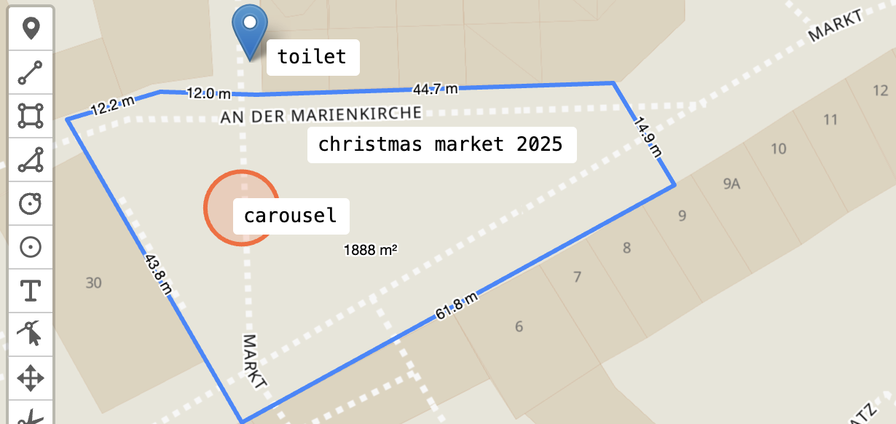
Map Styles
Angepasste Styles von OpenMapTiles berücksichtigen lokale Pfade von Kacheln, Schriftarten und Sprites.
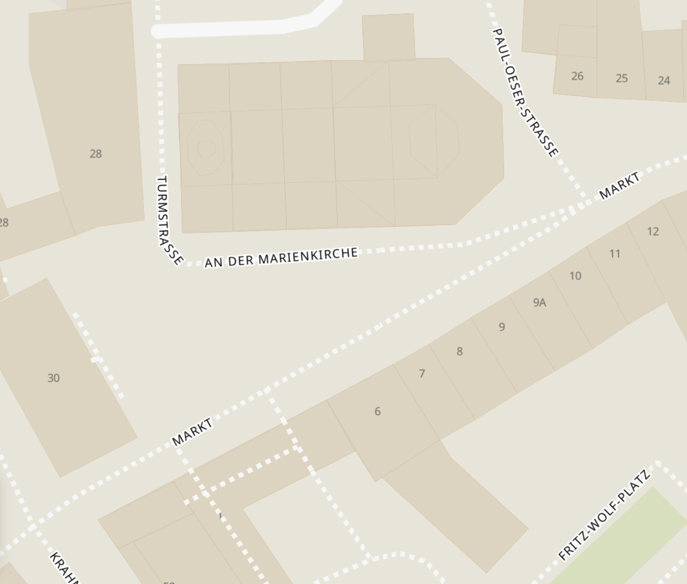
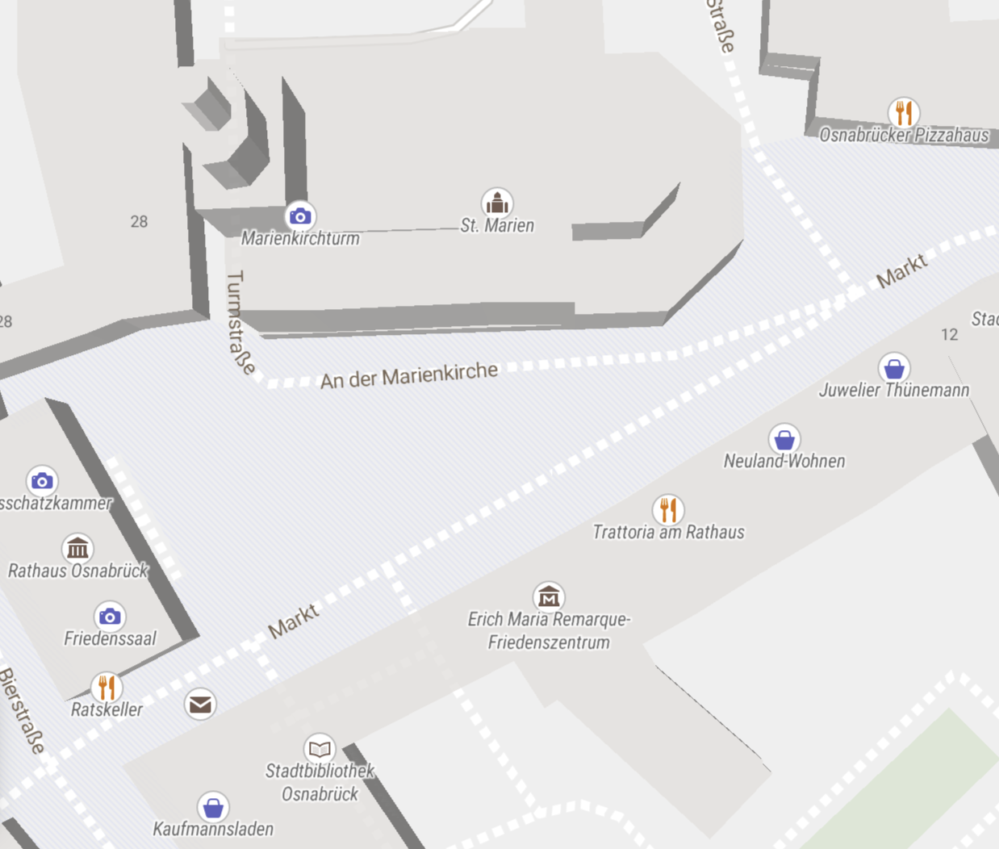
Postleitzahlengebiete
Vereinfachtes GeoJSON und CSV-Daten von www.suche-postleitzahl.org
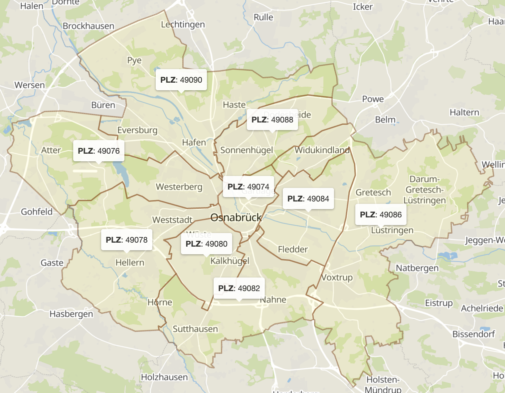
Exktraktion der Orte
Nodes mit PyOsmium aus OSM Daten extrahiert
| Tag | Wert |
|---|---|
| name | Weststadt |
| place | suburb |
- name tag muss vorhanden sein
- place tag muss vom Typ sein:
- city
- village
- suburb
- quarter
- neighbourhood
Extraction von Straßen
Ways mit ihren Nodes aus OSM-Daten extrahiert
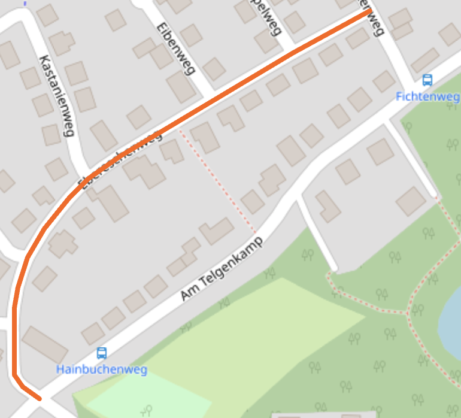
| Tag | Wert |
|---|---|
| name | Ebereschenweg |
| highway | residential |
- name tag muss vorhanden sein
- highway tag muss vom Typ sein:
- primary
- tertiary
- residential
- pedestrian
- ...
Datenbank für die Suche
Für eine effiziente Suche werden Orte und Straßen nach Postleitzahlen gruppiert.
Straßen werden zu einem einzelnen Punkt vereinfacht.
Häufigste Suchergebnisse in Deutschland:
| Type | Name | Vorkommen |
|---|---|---|
| Place | Altstadt | 79 |
| Street | Hauptstraße | 6.435 |
Military Grid Reference System (MGRS/UTMREF)
| Conversion | |
|---|---|
| Lat., Lon. | 52.538484, 7.295975 |
| UTM | 32 N 384431 5822297 |
| MGRS/UTMREF | 32U LD 84431 22297 |
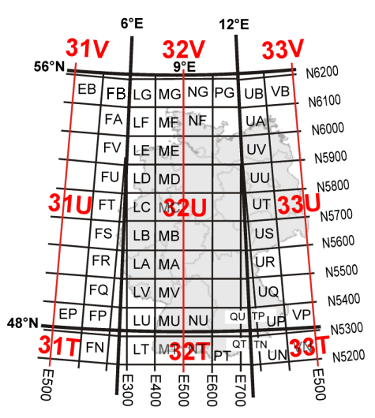
| Coordinate | Precision |
|---|---|
| 32U LD | 100 km |
| 32U LD 8 2 | 10 km |
| 32U LD 84 22 | 1 km |
| 32U LD 844 222 | 100 m |
| 32U LD 8443 2229 | 10 m |
| 32U LD 84431 22297 | 1 m |
PyGeodesy für lat/lon Konvertierung
Live Demo: 2.WK Bombenräumung
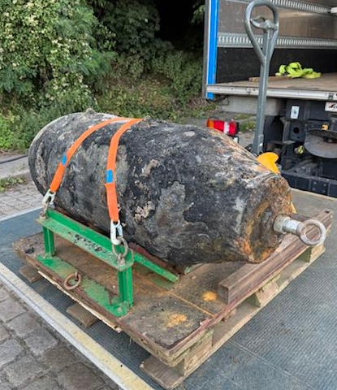
Long Range Wide Area Network (LoRaWAN)
- Betrieb bei 868 MHz in Europa
- Große Reichweite
- Niedriger Stromverbrauch
- Niedrige Datenrate
- Verschlüsselte Übertragung
Sensor Nodes mit Batterie/Akku

LORAWAN Gateway

- Messages weiterleiten zu The Things Stack Sandbox.
- Entschlüsselung auf dem Network Server, nicht auf dem Gateway.
- ChirpStack als lokaler Network Server auf dem Gerät verfügbar.
Test der LORAWAN-Reichweite
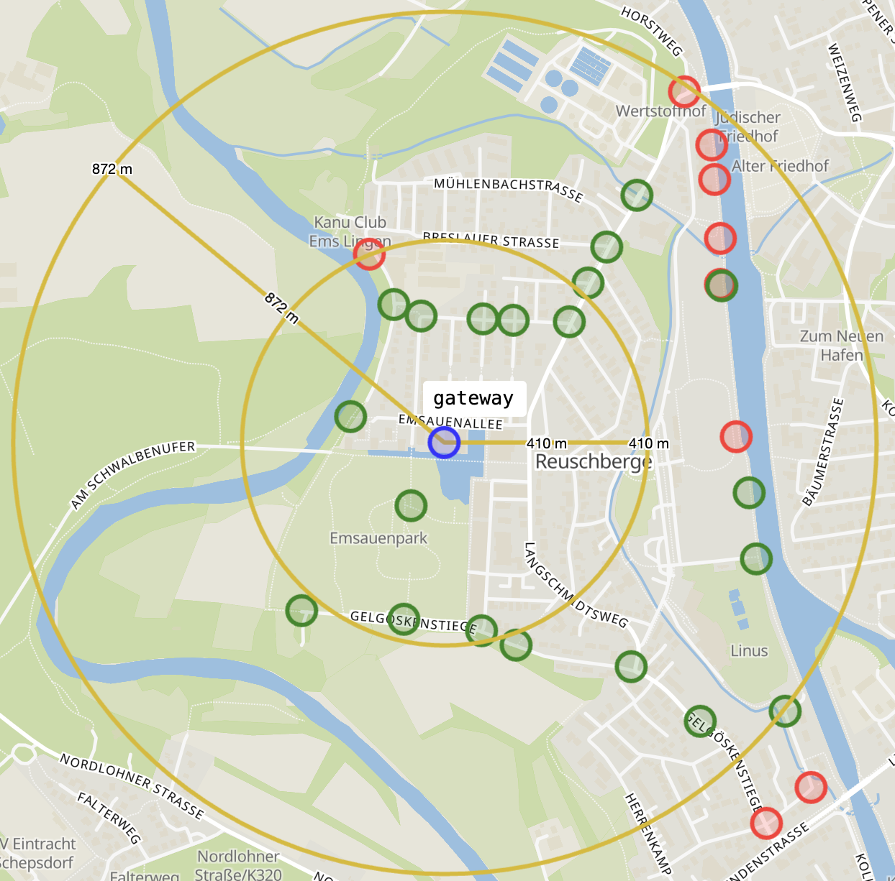
Mobiles Gateway (in Arbeit)

- Ist ein TTSS Gateway.
- Dupliziert eigene Session Keys.
- Entschlüsselt eigene Daten im Falle eines Internetausfalls.
Vielen Dank für Ihre/Eure Aufmerksamkeit
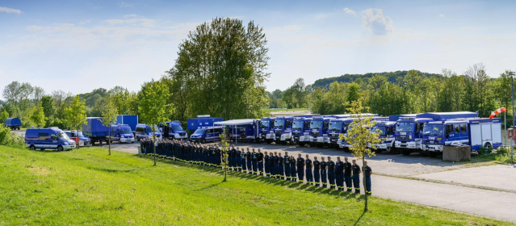